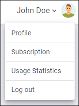

Profile Management
All users have access to a profile management page where they can manage their account, change their password, or configure certain email notifications. To open this page, click the drop-down arrow to the right of your user name and select Profile.

This opens the Profile page:
This profile management page allows you to configure various aspects of your profile data:
- Change Your Name
- To change the name associated with your profile, click the Edit
button in the General section and enter the change in the
Name field.Restriction: You cannot change the email address.
- Change Your Avatar
-
To change your avatar, click the Edit button in the General section, then click the current avatar image and choose Select Photo. You can then browse for a local image to use for your avatar and click Save to finalize your change. The supported extensions are: .jpg, .jpeg, .png, .gif. The maximum allowed size is 2048 KB.
To remove the current avatar, click the Edit button in the General section, then click the current avatar image, choose Remove, and click Save to finalize your change.Note: When loading large avatar images, they might be resized and lose some image quality. This is done to reduce network data traffic. - Change Your Password
- To change your password, click the Change password button in the Security section, enter your current password, then choose a new password, confirm it, and click Save password to finalize your change.
- Delete Your Account
- To delete your account, click the Delete button in the
Delete Account section. A confirmation dialog box will appear.
You will need to enter your password and click Delete to confirm
the operation. You cannot delete your account if you have the automatic renewal option
enabled in your subscription plan.Note: Your comments (as well as all site configurations for Administrators or the site Owner) will be kept for 14 days, but will not be visible. To recover your account within those 14 days, log in, go to your Profile page, and select Recover. After recovering the account, comments (and site information for Administrators or the site Owner) will be visible again. If a site Owner deletes their account and does not recover the account within 14 days, the account is purged and all site configurations, versions, and comments associated with that account are purged.
- Configure Email Notifications
-
To configure certain types of email notifications you will receive, go to the Notifications tab in the Profile page. You can choose to not receive any email notifications by deselecting the Send me email notifications when option. Otherwise, you can choose whether or not to receive an email notification when the following occurs:
- Someone replies to one of my comments
- Someone adds a comment on a topic where I added a comment
In addition, users automatically receive an email notification when certain events are triggered by an Administrator.